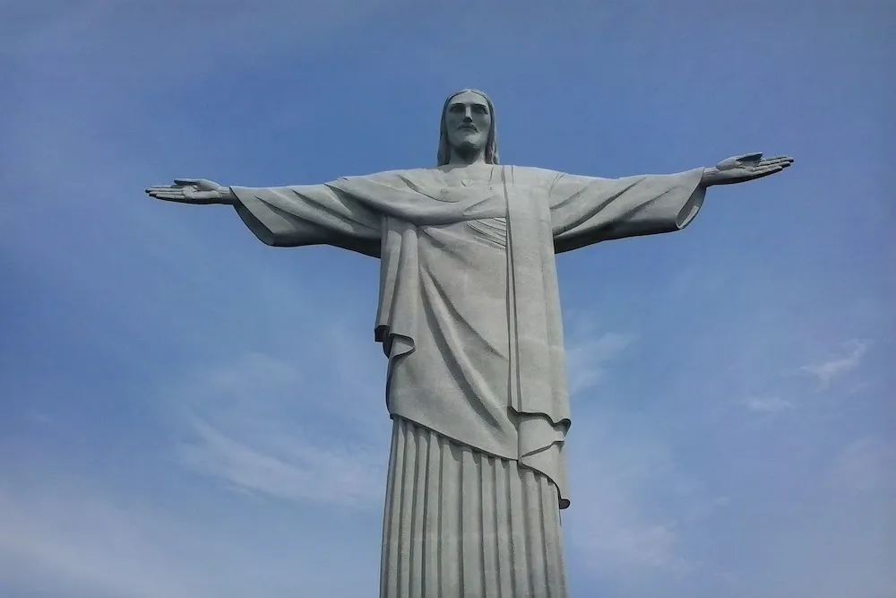

| Imagem | Descrição |
|---|---|
|  | Inaugurado em 1931, levou 5 anos para ser construído, e hoje é um dos cartões postais mais conhecidos do Brasil. Localizada a 709 metros acima do nível do mar, a construção tem 38 metros de comprimento, sendo que 8 metros compõem apenas o pedestal. É a obra mais jovem entre as demais maravilhas do mundo moderno. |
| Idealizada e construída ao longo de várias dinastias chinesas, a Grande Muralha da China começou a ser feita em 220 a.C., por ordem do primeiro imperador chinês Qin Shihuang, da dinastia Qin. A ideia da obra era oferecer proteção das invasões vindas do Norte. Com o passar do tempo, a Grande Muralha acabou se tornando uma das construções mais icônicas da história da humanidade e uma das 7 Maravilhas do Mundo Moderno. | |
| Símbolo do Império Romano, o Coliseu é o mais famoso anfiteatro do mundo e uma das obras arquitetônicas mais importantes da história da humanidade. Com cerca de 2 mil anos de história, foi palco de lutas de gladiadores a obras teatrais. Atualmente, é uma das 7 Maravilhas do Mundo Moderno mais disputadas entre os visitantes, e provavelmente um dos atrativos responsáveis por manter a Itália entre os países mais visitados do mundo. | |
| A civilização maia nos presenteou com legados arquitetônicos, artísticos, matemáticos, astronômicos e sociais. Chichén Itzá, escolhida como uma das Maravilhas do Mundo Moderno, era o centro político e econômico desse povo. A pirâmide de Kukulkan (provavelmente o ícone mais importante e popular de todos os templos Maias), a Praça das Mil Colunas, o Campo de Jogos dos Prisioneiros e o Templo de Chac Mool também são exemplos da grandiosidade e dedicação deste povo – e são atrações que podem ser visitadas dentro desse mesmo sítio arqueológico. | |
| Inteiramente esculpida em arenito, as Ruínas de Petra, que sobreviveram aos terremotos e à corrosão natural do tempo, são donas de uma beleza única. Não à toa, foram escolhidas como uma das 7 Maravilhas do Mundo Moderno. Localizada entre as montanhas que formam o flanco leste de Wadi Araba, vale que vai do Mar Morto ao Golfo de Aqaba, Petra foi habitada aproximadamente em 1200 a.C. pelos Nabateus, responsáveis pela bela arquitetura da cidade. | |
| Principal monumento da Índia, o Taj Mahal é um impressionante mausoléu. Construído entre 1630 e 1652, cerca de 22 mil homens trabalharam durante as obras. Localizado em Agra, o monumento foi feito em homenagem à Aryumand Banu Begam, a esposa preferida do imperador Shah Jahan, que faleceu dando à luz ao seu 14º filho. O nome da construção foi inspirado no apelido carinhoso que o imperador deu a sua amada, Mumtaz Mahal, e significa “joia do palácio”. Taj Mahal foi erguido sob o túmulo de Aryumand Banu Begam e unido ao rio Yamuna. A criação chama a atenção ainda por ser adornada com pedras semipreciosas em todo seu interior e com fios de ouro em sua cúpula. | |
| Machu Picchu é uma das mais prestigiadas heranças do povo Inca, um dos mais intrigantes da história. Descoberta em 1911, a Cidade Perdida dos Incas fica no topo de uma montanha com 2400 metros de altitude, no vale do rio Urubamba. Construída no século 15, conta hoje com apenas 30% de sua construção original. O restante foi todo reconstruído, permitindo uma pequena ideia do que seria toda a sua grandiosidade, caso a obra permanecesse intacta até hoje. |